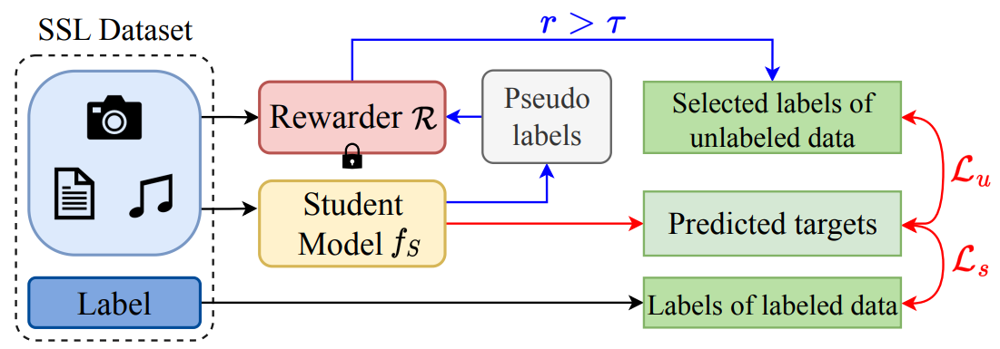

Hi, I'm Fang WU!
 Welcome to my personal web page! I am a Ph.D. student at Stanford Computer Science, affiliated with the SNAP group, the Arc Institute and Laboratory of Evolutionary Design. I have great fortune to work with Prof. Jure Leskovec, Prof. James Zou, and Prof. Brian Hie during the first-year rotation. Previously, I was a research engineer at Tsinghua University advised by Jinbo Xu. I obtained my Master's degree at Columbia University, advised by Dragomir Radev. It is a profound loss for me to lose Prof. Dragomir on March 29, 2023 (in memoriam). My research focuses on deep learning algorithms for scientific problems — in particular, 3D geometric networks, generative AI, domain adaptation, and other applications in chemistry and structural biology.
Welcome to my personal web page! I am a Ph.D. student at Stanford Computer Science, affiliated with the SNAP group, the Arc Institute and Laboratory of Evolutionary Design. I have great fortune to work with Prof. Jure Leskovec, Prof. James Zou, and Prof. Brian Hie during the first-year rotation. Previously, I was a research engineer at Tsinghua University advised by Jinbo Xu. I obtained my Master's degree at Columbia University, advised by Dragomir Radev. It is a profound loss for me to lose Prof. Dragomir on March 29, 2023 (in memoriam). My research focuses on deep learning algorithms for scientific problems — in particular, 3D geometric networks, generative AI, domain adaptation, and other applications in chemistry and structural biology.
Email: fangwu97 [at] stanford [dot] edu
Address: Stanford, CA, Stanford
Last update time: 2024.11.27
News and Highlights
 [2024/11] One collaborated paper on protein-ligand docking is accepted by Nature Communications.
[2024/11] One collaborated paper on protein-ligand docking is accepted by Nature Communications.
 [2024/09] One paper on semi-supervised learning is accepted by NeurIPS 2024.
[2024/09] One paper on semi-supervised learning is accepted by NeurIPS 2024.
 [2024/03] One paper on GNN bottleneck is accepted by IEEE TKDE.
[2024/03] One paper on GNN bottleneck is accepted by IEEE TKDE.
 [2024/03] One paper is accepted by ICML 2024 and another paper is accepted by IJCAI 2024.
[2024/03] One paper is accepted by ICML 2024 and another paper is accepted by IJCAI 2024.
Research Summary
* represents equal contribution and co-first authorship.
Graph Neural Networks (GNNs)
 Rethinking Explaining Graph Neural Networks via Non-parametric Subgraph Matching
Rethinking Explaining Graph Neural Networks via Non-parametric Subgraph Matching
Fang Wu, Siyuan Li, Dragomir Radev, Stan Z. Li
ICML 2023
[Paper]
[Code]
Discovering and Explaining the Representation Bottleneck of Graph Neural Networks from Multi-order Interactions
Fang Wu*, Siyuan Li*, Dragomir Radev, Stan Z. Li
IEEE TKDE
[Paper]
[Code]
Generative Models for Drug Design
 A Hierarchical Training Paradigm for Antibody Structure-sequence Co-design
A Hierarchical Training Paradigm for Antibody Structure-sequence Co-design
Fang Wu, Stan Z. Li
NeurIPS 2023
[Paper]
 D-Flow: Multi-modality Flow Matching for D-peptide Design.
D-Flow: Multi-modality Flow Matching for D-peptide Design.
Fang Wu*, Tinson Xu*, Shuting Jin*, Xiangru Tang, Zerui Xu, James Zou, Brian Hie
Under Review
[Paper]
[Code]
BC-Design: A Biochemistry-Aware Framework for High-Precision Inverse Protein Folding.
Xiangru Tang*, Xinwu Ye*, Fang Wu*, Yanjun Shao, Yin Fang, Siming Chen, Dong Xu, Mark Gerstein
Under review
[Paper]
A Survey of Generative AI for de novo Drug Design: New Frontiers in Molecule and Protein Generation.
Xiangru Tang*, Howard Dai*, Elizabeth Knight*, Fang Wu,, Yunyang Li, Tianxiao Li, Mark Gerstein
Briefings in Bioinformatics
[Paper]
[Github Repo.]
Biological Language Models (a.k.a. LLM for Science)
 Integration of Pre-trained Protein Language Mdels into Geometric Deep Learning Networks.
Integration of Pre-trained Protein Language Mdels into Geometric Deep Learning Networks.
Fang Wu, Liong Wu, Dragomir Radev, Jinbo Xu, Stan Z. Li
Communications Biology
[Paper]
[Code]
3D Geometric Deep Learning
 Interformer: An Interaction-Aware Model for Protein-Ligand Docking and Affinity Prediction.
Interformer: An Interaction-Aware Model for Protein-Ligand Docking and Affinity Prediction.
Houtim Lai, Longyue Wang, Ruiyuan Qian, Geyan Ye, Juhong Huang, Fandi Wu, Fang Wu, Xiangxiang Zeng, Wei Liu, and Peng Zhou
Nature Communications
[Paper]
[Code]
 Molformer: Motif-based Transformer on 3D Heterogeneous Molecular Graphs.
Molformer: Motif-based Transformer on 3D Heterogeneous Molecular Graphs.
Fang Wu, Dragomir Radev, Stan Z. Li
AAAI 2023
[Paper]
[Code]
Direct Prediction of Gas Adsorption via Spatial Atom Interaction Learning.
Jiyu Cui*, Fang Wu*, Wen Zhang*, Lifeng Yang*, Jianbo Hu, Yin Fang, Peng Ye, Qiang Zhang, Xian Suo, Yiming Mo, Xili Cui, Huajun Chen, Huabin Xing
Nature Communications
[Paper]
[Code]
Pretraining & Semi-supervised Learning
 Surface-VQMAE: Vector-quantized Masked Auto-encoders on Molecular Surfaces.
Surface-VQMAE: Vector-quantized Masked Auto-encoders on Molecular Surfaces.
Fang Wu, Stan Z. Li
ICML 2024
[Paper]
[Code]
A Semi-supervised Molecular Learning Framework for Activity Cliff Estimation.
Fang Wu
IJCAI 2024
[Paper]
[Code]
 Instructor-inspired Machine Learning for Robust Molecular Property Prediction.
Instructor-inspired Machine Learning for Robust Molecular Property Prediction.
Fang Wu*, Shuting Jin*, Siyuan Li, Stan Z. Li
NeurIPS 2024
[Paper]
[Code]
Domain Adaptation in Biochemistry
 Metric Learning-enhanced Optimal Transport for Biochemical Regression Domain Adaptation
Metric Learning-enhanced Optimal Transport for Biochemical Regression Domain Adaptation
Fang Wu*, Nicolas Courty*, Shuting Jin*, Stan Z. Li
Patterns
[Paper]
[Code]
Molecular Dynamics (MD) Simulations
 Pretraining of Equivariant Graph Matching Networks with Conformation Flexibility for Drug Binding
Pretraining of Equivariant Graph Matching Networks with Conformation Flexibility for Drug Binding
Fang Wu*, Shuting Jin*, Yinghui Jiang*, Xurui Jin, Bowen Tang, Zhangming Niu, Qiang Zhang, Xiangxiang Zeng, Stan Z. Li
Advanced Science
[Paper]
[Code]
 DiffMD: A Geometric Diffusion Model for Molecular Dynamics Simulations
DiffMD: A Geometric Diffusion Model for Molecular Dynamics Simulations
Fang Wu, Stan Z. Li
AAAI 2023 (Oral)
[Paper]
Others (e.g., NLP, CV)
 InsertGNN: Can Graph Neural Networks Outperform Humans in TOEFL Sentence Insertion Problem?
InsertGNN: Can Graph Neural Networks Outperform Humans in TOEFL Sentence Insertion Problem?
Fang Wu, Stan Z. Li
EMNLP 2024 Findings
[Paper]
[Data]
 Architecture-Agnostic Masked Image Modeling: From ViT back to CNN
Architecture-Agnostic Masked Image Modeling: From ViT back to CNN
Siyuan Li*, Di Wu*, Fang Wu, Zelin Zang, Kai Wang, Lei Shang, Baigui Sun, Hao Li, Stan Z. Li
ICML 2023
[Paper]
[Code]

SemiReward: A General Reward Model for Semi-supervised Learning
Siyuan Li*, Weiyang Jin*, Zedong Wang, Fang Wu,, Zicheng Liu, Cheng Tan, Stan Z. Li
ICLR 2024
[Paper]
[Code]
Education
 Stanford University, 2024-now
Stanford University, 2024-now
• Ph.D. in Computer Science
 Columbia University, 2019-2021
Columbia University, 2019-2021
• Master of Science
• GPA: 3.51/4.0
 Central University of Economics and Finance, 2015-2019
Central University of Economics and Finance, 2015-2019 Industry Experience
Research Scientist (2023.06-2024.06)
• BioMap
• Led by Le Song
 Research Intern (2022.01-2022.07)
Research Intern (2022.01-2022.07)
• MindRank
• Led by Zhangming Niu
Research Experience
Before joining Stanford University, I feel fortunate to be a research assistant/engineer advised by Jinbo Xu at Tsinghua University and Stan Z. Li at Westlake University, and recieved guidance as a visiting student from Huajun Chen, Xiang Bai and Danny Lan.
 Research Student (2024.09-now)
Research Student (2024.09-now)
• Arc Institute
• Advised by Brian Hie
 Research Engineer (2022.08-2023.05)
Research Engineer (2022.08-2023.05)
• Tsinghua University
• Advised by Jinbo Xu
 Research Assistant (2021.11-2022.07)
Research Assistant (2021.11-2022.07) Professional Services
Reviewer: ICLR 2024-2025 , NeurIPS 2023-2024, CVPR 2025, AISTATS 2025, ML4H 2023-2024, IEEE TNNLS
Acknowledgement
My study cannot be possible without the support from my awesome friends, mentors, and collaborators! Check out some of them:
Prof. Jure Leskovec, Prof. James Zou, Prof. Brian Hie, Prof. Brian Trippe, Dr. Francois Chaubard at Stanford University.
Prof. Dragomir Radev, Dr. Xiangru Tang at Yale University. R.I.P. to Dr. Dragomir.
Aside from university collaborations, I also collaborated with many industrial AIDD companies, including MindrankAI, MoleculeMind, and Biomap
Dr. Zhangming Niu, Dr. Xurui Jin, and Dr. Yinghui Jiang at MindrankAI.
Dr. Xiaoyang Jing, Dr. Tenglong Wang, Dr. Wuwei Tan at MoleculeMind.